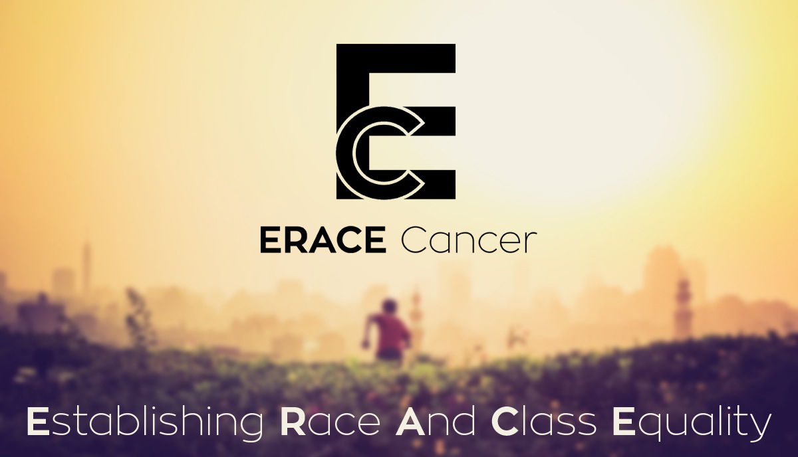

~30% of cancer deaths are due to five behavioral and dietary risks: high body mass index, low fruit and vegetable intake, lack of physical activity, tobacco use, and alcohol use.

Duis mollis, est non commodo luctus, nisi erat porttitor ligula, eget lacinia odio sem nec elit. Cras mattis consectetur purus sit amet fermentum. Fusce dapibus, tellus ac cursus commodo, tortor mauris condimentum nibh.

Read the latest posts from ERACE Cancer team members as we documents our outreach efforts, research topics important to us, and report on news in the field of cancer and health disparities.
Overall, about 1 in 2 Hispanic men and 1 in 3 Hispanic women will be diagnosed with cancer in their lifetime. The lifetime probability of dying from cancer is 1 in 5 for Hispanic men and 1 in 6 for Hispanic women. Cancer is the leading cause of death among Hispanics, accounting for 21% of deaths overall and 15% of deaths in children.


Addressing a crowded room at the national convention of the Medical Committee for Human Rights in a Chicago hotel in 1966, Dr. Martin Luther King Jr. declared discriminatory health policy uniquely offensive: “Of all the forms of inequality, injustice in healthcare is the most shocking and inhuman.” Almost fifty years later, the health care system of the United States remains a model of injustice...
ERACE Cancer is a group of students and researchers working to Establish Race and Class Equality in Cancer. We lead educational initiatives that disseminate information on cancer prevention strategies to the Stanford campus community and at-risk populations in the Bay Area. In addition to outreach efforts, we serve as a forum for discussions on the social determinants of health and the societal factors that shape access to adequate healthcare.